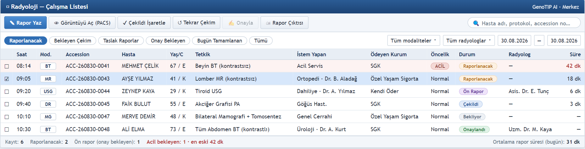
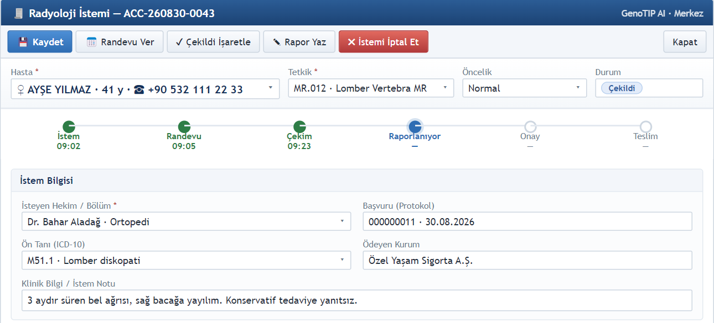
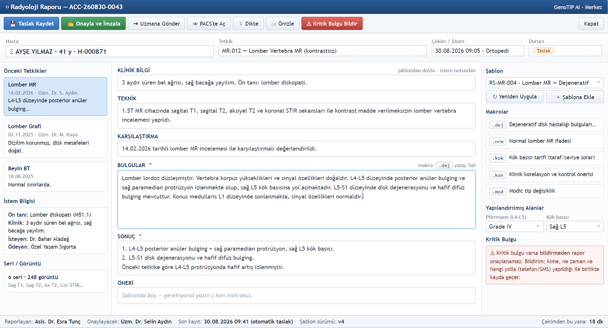
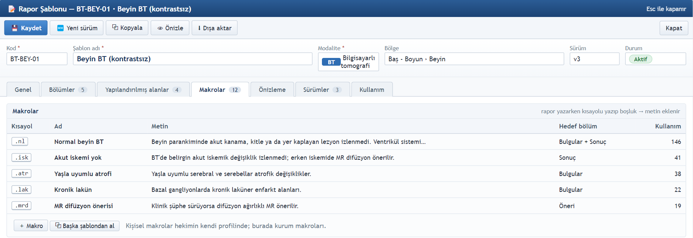
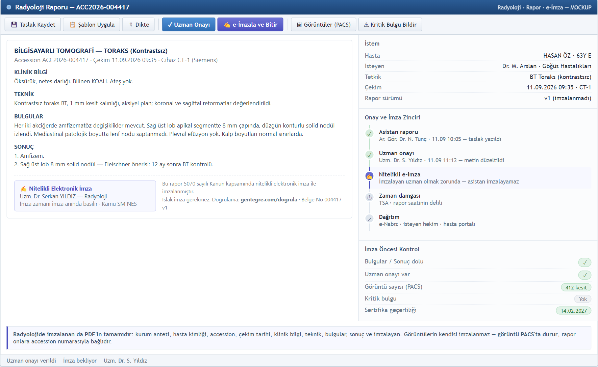
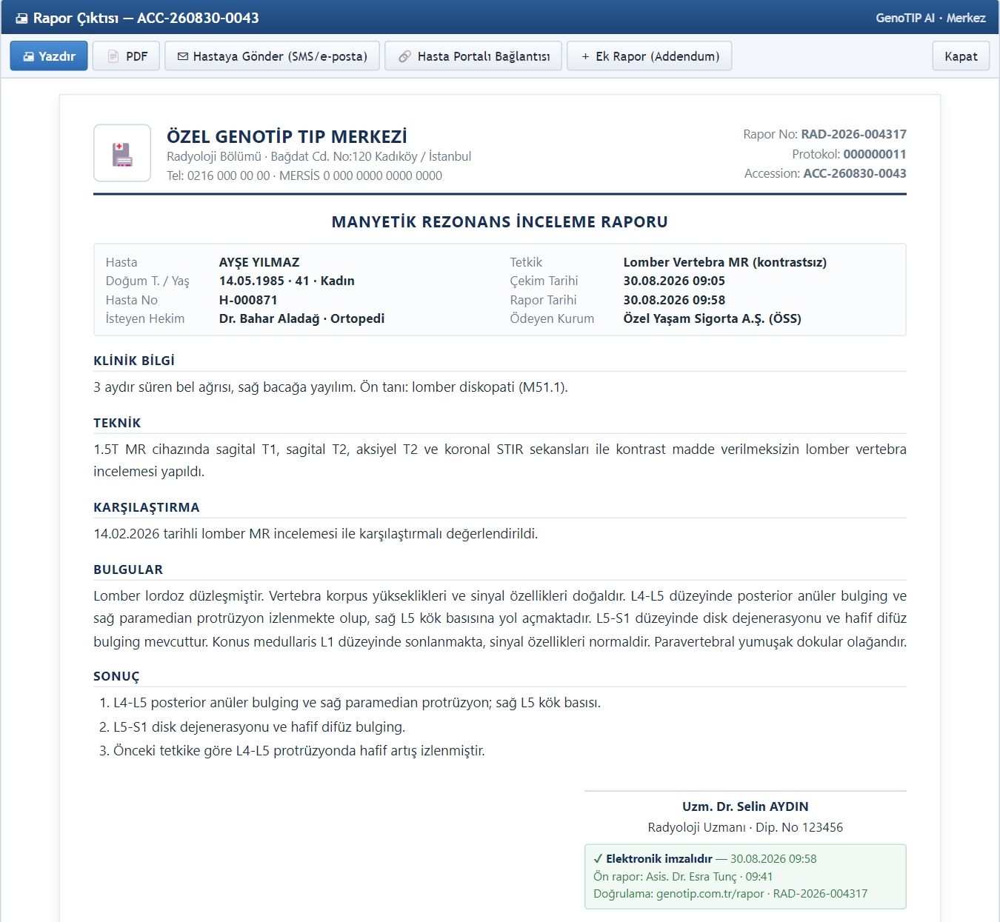
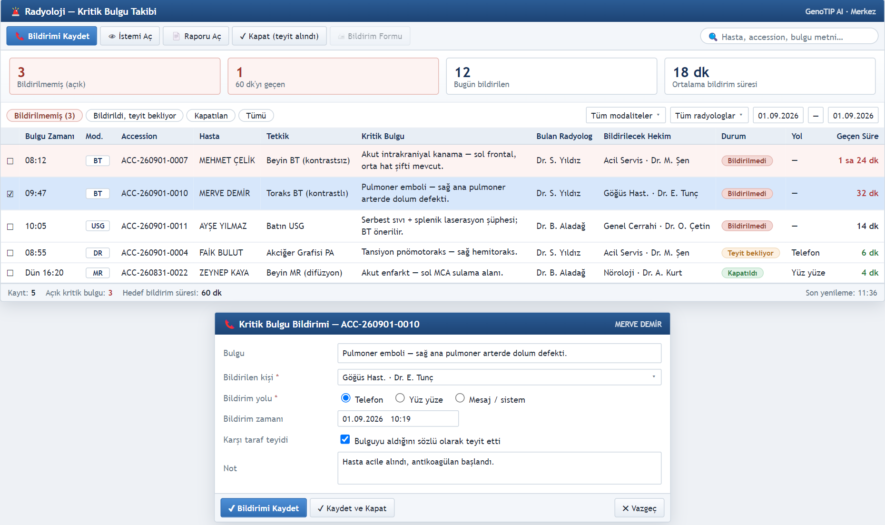
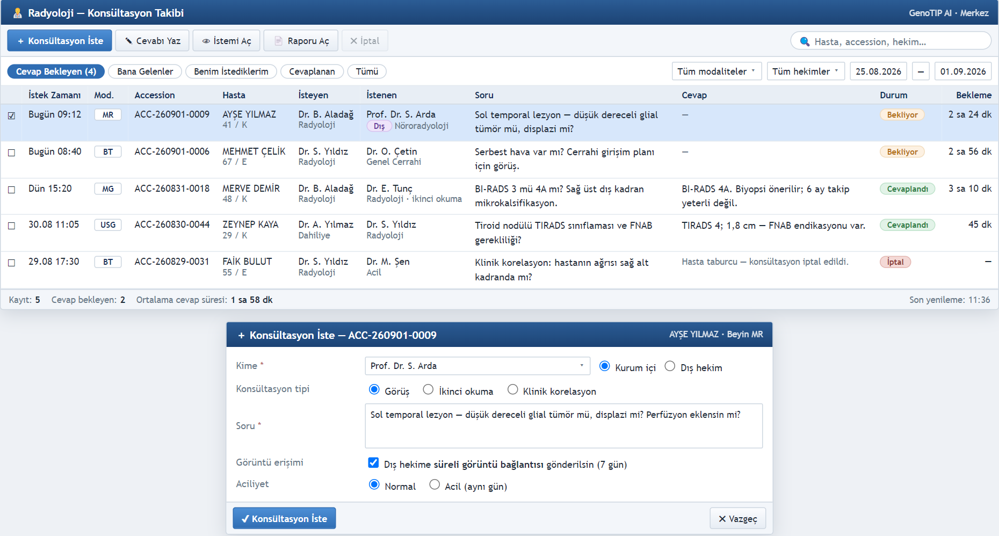
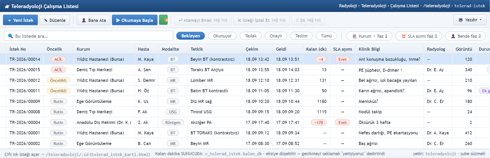
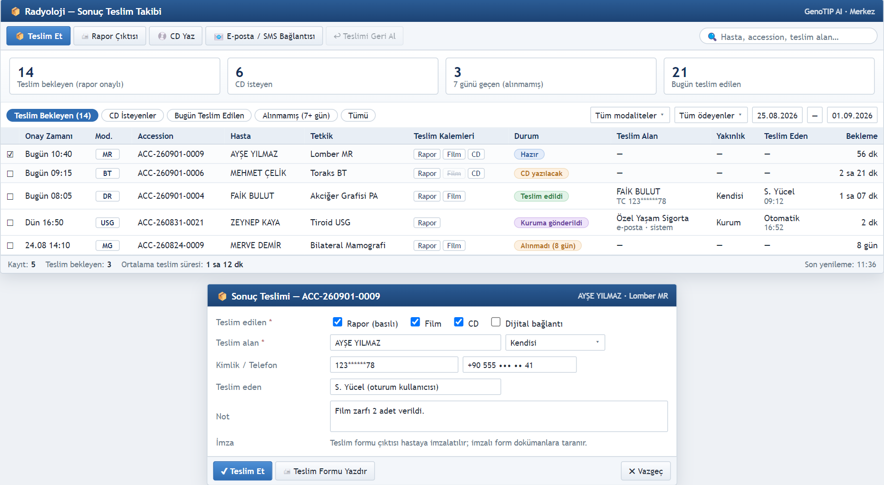

Raportör Doktor
Eğitimi
Raportör doktor eğitimine hoş geldiniz.
Bu eğitimde önce rapor bekleyen işleri nerede bulacağınızı ve istemdeki klinik bilgiyi nasıl okuyacağınızı göreceğiz.
Ardından şablon ve makrolarla raporu yazmayı, uzmana göndermeyi ve onaylayıp imzalamayı anlatacağız.
Kritik bulgu bildirimi, ek rapor ve konsültasyon gibi özel durumlara da tek tek değineceğiz.
Son olarak onaylanan raporun hastaya ve e-Nabız'a nasıl ulaştığını göreceğiz. Boşluk tuşuyla duraklatabilir, ok tuşlarıyla ileri ya da geri gidebilirsiniz.
Raportörün günü ve iş akışı
Sizin işiniz, teknisyen çekimi tamamlayıp Çekildi işaretlediği anda başlar.
O tetkik Çalışma Listesi'nde Raporlanacak olarak sıranıza düşer.
Raporu şablon ve makrolarla yazar, taslak olarak kaydedersiniz.
Asistan hekimseniz raporu uzmana gönderirsiniz; onay yetkiniz varsa raporu doğrudan onaylayıp imzalarsınız.
Onaylanan rapor kilitlenir, rapor numarası alır, isteyen hekimin ekranına ve e-Nabız kuyruğuna gider; hastaya teslimi ayrıca kaydedilir.
İstem bu yolculukta Bekleyen Çekim, Raporlanacak, Raporlanıyor, Onay Bekleyen ve Onaylandı durumlarından geçer.
İki kural her şeyin üstündedir: kritik bulgu raporu beklemeden bildirilir, onaylı rapor ise asla yeniden yazılmaz.
Giriş, menü ve yardım
 1
2
1
2
- Kendi kullanıcınızla girin; menüde yalnız rolünüzün yetkili olduğu ekranlar görünür.
- İşleriniz Radyoloji grubunda: Çalışma Listesi, Pano, Kritik Bulgular, Konsültasyonlar, Sonuç Teslim; ayarlarda Rapor Şablonları.
- Ctrl K komut paleti: "Radyoloji" yazıp ekrana gidin.
- Üst şeritteki ? açık ekranın yardımını açar.
- 💡 Yapay Zekâya Sor: "Raporu nasıl onaylarım?" gibi kullanım sorularını yanıtlar; klinik soru yanıtlamaz, kayıt değiştirmez.
 3
4
5
3
4
5
Sisteme kendi kullanıcı adınızla girersiniz; sol menüdeki Radyoloji grubunda Çalışma Listesi, Kritik Bulgular, Konsültasyonlar ve Sonuç Teslim ekranlarını bulursunuz.
Üst şeritteki arama kutusu komut paletidir; Kontrol ve K tuşlarına basıp Radyoloji yazarak hızla gidebilirsiniz.
Sağ üstteki soru işareti, açık olan ekranın yardım belgesini açar.
Sağ alttaki Yapay Zekâya Sor asistanı, programın kullanımıyla ilgili soruları bulunduğunuz ekranı bilerek yanıtlar; klinik yorum yapmaz ve kayıt değiştirmez.
Üst şeritte Demo ya da Eğitim Ortamı etiketi varsa deneme kurulumundasınız; etiket yoksa onayladığınız her rapor gerçektir.
Çalışma listesi: rapor bekleyen işler

1 2 3 4 5 6- Güne Raporlanacak çipiyle başlayın; asistanın gönderdikleri Onay Bekleyen'dedir.
- Liste önceliğe (Çok Acil / Acil önce) ve bekleme süresine göre sıralanır.
- Satırı seçip ✎ Rapor Yaz: rapor ekranı açılır.
Gününüz Radyoloji menüsündeki Çalışma Listesi'nde geçer; Raporlanacak çipi rapor bekleyen tetkikleri, Onay Bekleyen çipi ise asistanların uzmana gönderdiği ön raporları gösterir.
Liste önce acil işleri, sonra en uzun bekleyenleri üste getirir; acil bekleme süresi bir kalite göstergesidir.
Modalite, radyolog ve tarih süzgeçleriyle ya da arama kutusuna hasta adı veya accession numarası yazarak listeyi daraltabilirsiniz.
Raporlayacağınız satırı seçip Rapor Yaz düğmesine basın.
Bu görsel bir ekran mockup'ıdır; programdaki çip adları altta yazılıdır ve PACS'ta görüntü açma düğmesi henüz yoktur.
İstemi, klinik bilgiyi ve önceki tetkikleri okuma

1 2 3 4Rapor ekranının sol sütunu
- Önceki Tetkikler: hastanın eski raporları; tarih, raporlayan ve özet.
- İstem Bilgisi: ön tanı, klinik bilgi, isteyen hekim, ödeyen kurum.
- Seri / Görüntü: seri ve görüntü sayısı, Study UID; eşleşme yoksa "PACS eşleşmesi yok."
Her istemin kartında üstte bir akış şeridi vardır: istem, randevu, çekim, raporlama, onay ve teslim adımları zamanlarıyla işaretlenir.
İstem Bilgisi bölümünde isteyen hekimi ve ICD-10 kodlu ön tanıyı görürsünüz.
En önemli alan klinik bilgidir; raporunuz isteyen hekimin bu sorusuna cevap vermelidir.
Rapor ekranının sol sütununda hastanın önceki tetkikleri ve istem bilgisi hep açıktır; karşılaştırma gerekiyorsa ilgili bölüme yazarsınız.
Seri ve görüntü kutusu, çalışmanın PACS ile eşleşip eşleşmediğini gösterir.
Program içinde görüntü açan bir görüntüleyici henüz yoktur; görüntüleri PACS iş istasyonunuzda aynı accession numarasıyla açarsınız.
Rapor yazma: şablon ve bölümler

1 2 3 4 5 6- Tetkiğe bağlı şablon kendiliğinden gelir; başka şablon seçerseniz yazılmış metnin silineceği sorulur.
- Bölümler şablondan gelir (Teknik, Bulgular, Sonuç ve Öneriler…).
- * işaretli bölümler zorunludur.
- Kurumda Bakanlık profili açıksa: Bulgular en az 50 karakter, Sonuç ve Öneriler dolu olmalı.
- 💾 Taslak Kaydet: "Rapor taslağı kaydedildi."; istem Raporlanıyor olur.
Rapor ekranı açıldığında tetkiğe bağlı şablon kendiliğinden yüklenir; farklı bir şablon seçerseniz program yazdığınız metnin silineceğini sorar.
Bölümler şablondan gelir; klinik bilgi bölümü istemden dolar.
Bulgular ve Sonuç gibi yıldızlı bölümler zorunludur; boş kalırlarsa rapor onaya gönderilemez.
Kurumunuzda Bakanlık profili açıksa bulgular en az elli karakter olmalı ve sonuç bölümü boş bırakılmamalıdır.
Ara ara Taslak Kaydet düğmesine basın; ilk kayıtla istem Raporlanıyor durumuna geçer.
Mockup'taki Dikte ve PACS'te Aç düğmeleri programda henüz yoktur.
Yazdırılmaz işaretli bölümler iç notlar içindir; çıktıya ve e-Nabız'a gitmez.
Makrolar ve yapılandırılmış alanlar

1 2 3- Rapor ekranının sağındaki Makrolar listesinde makroya tıklayın; hazır metin eklenir.
- Metin makronun hedef bölümüne, hedefi yoksa en son yazdığınız bölüme eklenir.
- Yapılandırılmış Alanlar: şablonun skor / ölçüm alanları (seçim ya da değer).
Makrolar, sık yazdığınız cümlelerin hazır hâlidir; rapor ekranının sağ sütununda kısayol ve adıyla listelenir, tıkladığınızda metin rapora eklenir.
Metin makronun hedef bölümüne gider; hedefi tanımlı değilse en son yazdığınız bölüme eklenir.
Şablonda skor ya da ölçüm alanları varsa bunlar Yapılandırılmış Alanlar başlığında, seçim listesi ya da değer kutusu olarak gelir.
Makrolar şablona bağlıdır ve Rapor Şablonları ekranında, şablon kartının Makrolar sekmesinde tanımlanır; bu görsel o ekranın mockup'ıdır.
Bakanlık profili açık kurumda ayrıca istem nedeni ve çekim kalitesi puanını girersiniz.
Mockup'ta gösterilen, kısayolu yazıp Tab tuşuyla genişletme henüz programda yoktur; makroyu tıklayarak eklersiniz.
Ön rapor ve uzmana gönderme
Asistan / genç hekim
- Raporu yazın, 💾 Taslak Kaydet.
- ➜ Uzmana Gönder: "Ön rapor uzman onayına gönderildi."
- İstem Onay Bekleyen olur; uzmanın listesine düşer.
Uzman
- Onay Bekleyen çipinde raporu açın; metni okuyup gerekirse düzeltin.
- ✍ Onayla ve İmzala (sonraki slayt).

1 2 3Radyolojide rapor çoğu zaman iki hekimden geçer: asistan ya da genç hekim raporu yazar ve taslak olarak kaydeder.
Uzmana Gönder düğmesine bastığında ön rapor uzman onayına gider ve istem Onay Bekleyen durumuna geçer.
Uzman, Çalışma Listesi'nde Onay Bekleyen çipinden raporu açar, okur ve gerekirse düzeltir.
Ardından Onayla ve İmzala düğmesiyle raporu bitirir.
Rolünüzde onay yetkisi yoksa onay düğmesi yetki hatası verir; o durumda raporu uzmana gönderirsiniz.
Görseldeki onay zinciri e-imza tasarımının mockup'ıdır: bugün programda yazan ve onaylayan kaydı vardır, nitelikli elektronik imza ve zaman damgası ise yol haritasındadır.
Onayla ve İmzala; çıktı
- ✍ Onayla ve İmzala → "Rapor onaylandı ve imzalandı; artık kilitlidir."
- Rapor numarası bu anda verilir; istem Onaylandı, üst bilgide 🔒 Kilitli.
- 🖨 Çıktı: hastaya verilecek rapor; tarayıcıdan yazdırın ya da PDF kaydedin.
Onay engelleri
| Zorunlu bölümler boş: rapor onaya gönderilemez. | Yıldızlı bölümleri doldurun. |
| Kritik bulgu bildirimi kaydedilmeden rapor onaylanamaz. | Önce ⚠ Kritik Bulgu Bildir. |
| Bakanlık profili: Bulgular en az 50 karakter / Sonuç ve Öneriler boş | İki bölümü tamamlayın. |

1 2 3Onay yetkiniz varsa Onayla ve İmzala düğmesine basın; program raporun onaylandığını ve artık kilitli olduğunu söyler.
Rapor numarası bu anda verilir, istem Onaylandı olur ve üst bilgide kilit işareti görünür.
Çıktı düğmesi hastaya verilecek raporu açar; tarayıcıdan yazdırabilir ya da PDF olarak kaydedebilirsiniz. Onaysız raporun çıktısında taslak uyarısı bulunur.
Zorunlu bölümler boşsa, kritik bulgu bildirilmemişse ya da Bakanlık profilinin koşulları sağlanmamışsa program onayı reddeder ve nedenini yazar.
Çıktıda onaylayan uzmanın yanında ön raporu yazan hekim de görünür; sorumluluk zinciri kaybolmaz.
Nitelikli elektronik imza ve toplu imza henüz yol haritasındadır; bugünkü onay, raporu kimin onayladığını kayda geçirir.
Kritik bulgu bildirimi
- Önce telefonla haber verin; hayat kurtaran bildirimdir, imza değil.
- Rapor ekranında "Bu tetkikte kritik bulgu var" + ⚠ Kritik Bulgu Bildir.
- Bulgu, Bildirilen kişi, Yol (Telefon · SMS · Yüz yüze · e-Posta), Geri bildirim → Kaydet.
- Bildirim kaydı olmadan rapor onaylanmaz.
- Teyit gelince Kritik Bulgular'da ✔ Kapat (teyit alındı).

1 2 3 4Kritik bir bulgu gördüğünüzde önce isteyen hekime ya da servise telefonla haber verin; hastanın hayatını kurtaran şey bu bildirimdir.
Ardından rapor ekranında bu tetkikte kritik bulgu var kutusunu işaretleyip Kritik Bulgu Bildir düğmesine basın.
Açılan pencereye bulguyu, haber verdiğiniz kişiyi, bildirim yolunu ve karşı tarafın geri bildirimini yazıp kaydedin.
Kritik işaretli bir tetkikte bildirim kaydı olmadan rapor onaylanamaz.
Karşı taraf teyit ettiğinde Kritik Bulgular listesinde satırı seçip Kapat düğmesine basarsınız; takip Bildirilmedi, Teyit Bekleyen, Teyitli ve Kapatılan adımlarından geçer.
Bildirilmemiş kritik bulgu listeden düşmez ve geçen süre büyüdükçe kırmızıya döner.
Ek rapor (addendum) ve düzeltme kuralları
- Taslak ve ön rapor serbestçe düzeltilir.
- Uzman, asistanın metnini onaylamadan önce değiştirebilir.
- Her kayıtta 💾 Taslak Kaydet.
- Rapor kilitlidir; metin değiştirilemez.
- Düzeltme denemesinde: Rapor onaylanmış ve kilitli; düzeltme için ek rapor (addendum) açın.
- Kilitli raporda ＋ Ek Rapor.
- "Ek rapor (addendum) açıldı; orijinal rapor değişmeden kalır."
- Ek rapor da onaylanır; ikisi birlikte durur.
Onaydan önce taslak ve ön rapor serbestçe düzeltilebilir; uzman da asistanın metnini onaylamadan önce değiştirebilir.
Onaylanan rapor ise kilitlenir; metni değiştirmeye çalışırsanız program ek rapor açmanızı söyler.
Kilitli raporda Ek Rapor düğmesine bastığınızda bir addendum açılır; orijinal rapor değişmeden kalır ve ek rapor da ayrıca onaylanır.
Onaylı bir raporu düzeltmek için asla yeni rapor yazmayın; ilk rapor hekime ve e-Nabız'a ulaşmıştır, düzeltme izlenebilir olmalıdır.
Ek raporun sık nedenleri yazım ya da taraf hatası, sonradan gelen klinik bilgi ve konsültasyon sonrası görüş değişikliğidir; gerekçeyi açıkça yazın.
Konsültasyon ve ikinci görüş
- Rapor ekranının sağındaki Konsültasyon kutusunda ＋ İkinci Görüş İste.
- Gerekçe'yi yazın (zorunlu), Gönder: "Konsültasyon istendi."
- Görüş Radyoloji › Konsültasyonlar'da ✎ Cevabı Yaz ile yazılır; rapor ekranında ✎ Görüşü Gir.
- Gelen görüş rapora Görüş geldi rozetiyle iliştirilir.

1 2 3 4Şüpheli bir olguda ikinci görüş almak için rapor ekranının sağındaki Konsültasyon kutusunda İkinci Görüş İste düğmesine basın, gerekçeyi yazıp gönderin.
Görüş, Konsültasyonlar listesinde Cevabı Yaz ile ya da rapor ekranında Görüşü Gir ile yazılır.
Gelen görüş, rapor ekranında Görüş geldi rozetiyle görünür.
Görüş raporu kendiliğinden değiştirmez; onaylı raporda değişiklik gerekiyorsa ek rapor yazarsınız.
Rapor kilitli olsa bile konsültasyon istenebilir.
Mockup'taki kime, konsültasyon tipi ve aciliyet seçimi programda henüz yoktur; istek gerekçeyle açılır ve görüşü yazan kişi kayıttan bellidir.
Teleradyoloji: dış kurumların işleri

1 2 3 4- Çipler: Bekleyen · Okunuyor · Taslak · Onaylı · Teslim · Tümü.
- 👤 Bana Ata → ▶ Okumaya Başla → raporu aynı rapor ekranında yazın → 📦 Teslim Et.
- Kurumla yazışma: 💬 Yazışma. Atama ve teslim yetkiye bağlıdır.
Kurumunuz başka hastane ya da merkezlere uzaktan raporlama yapıyorsa, bu işler Teleradyoloji menüsündeki Çalışma Listesi'nde bekleyen, okunuyor, taslak, onaylı ve teslim çiplerinde durur.
İşi önce Bana Ata ile üstlenir, Okumaya Başla ile okumaya geçersiniz; rapor, kurum içi raporla aynı ekranda yazılır ve onaylanır.
Kalan dakika sütunu sözleşmedeki süreden hesaplanır ve eksiye düşebilir; acil ve süresi yaklaşan işleri önce alın.
Onaylanan rapor Teslim Et ile kuruma teslim edilir; kurumla Yazışma düğmesinden haberleşirsiniz. Atama ve teslim ayrı yetkilere bağlıdır.
Mockup'ın altındaki Faz 2 şeridi, yani PACS'ta görüntüleme, DICOM alımı ve HL7 ile otomatik teslim henüz yapılmadı.
Sonuç teslimi ve e-Nabız

1 2 3 4Onayın tetiklediği işler
- Rapor isteyen hekimin muayene kartında İstem & Sonuçlar'da görünür.
- İş Sonuç Teslim › Teslim Bekleyen'e düşer; onaysız rapor düşmez.
- Teslimde kalem (rapor, film, CD, dijital), teslim alan ve kimlik yazılır.
- Onayda e-Nabız'a 409 Radyoloji Sonuç Kayıt paketi kendiliğinden üretilir; teslimi beklemez.
- Bölümler başlık + açıklama olarak gider; "yazdırılmaz" bölümler gitmez.
Raporu onayladığınız anda rapor, isteyen hekimin muayene kartındaki İstem ve Sonuçlar sekmesinde görünür.
İş aynı anda Sonuç Teslim listesinin Teslim Bekleyen çipine düşer; onaylanmamış rapor bu listeye hiç gelmez.
Teslimi genellikle banko yapar: hangi kalemlerin verildiğini, teslim alanı ve kimliğini yazar.
e-Nabız için ayrıca bir şey yapmanız gerekmez; onayla birlikte dört yüz dokuz numaralı Radyoloji Sonuç Kayıt paketi kendiliğinden üretilir.
Rapor bölümleri başlık ve açıklama olarak gider; yazdırılmaz işaretli bölümler gönderilmez.
Paketin durumunu e-Nabız Gönderim Kuyruğu'nda görebilirsiniz; hasta portalı açıksa hasta onaylı raporunu oradan da görür.
Sık karşılaşılan durumlar ve çözümleri
| Ekranda gördüğünüz | Ne yapmalı? |
|---|---|
| Zorunlu bölümler boş: rapor onaya gönderilemez. | Şablonda yıldızlı bölümleri (Bulgular, Sonuç) doldurun. |
| Bakanlık profili: "Bulgular" en az 50 karakter / "Sonuç ve Öneriler" boş | Bakanlık profili açık kurumda bu iki bölüm zorunludur; tamamlayın. |
| Kritik bulgu bildirimi kaydedilmeden rapor onaylanamaz. | Haber verin, sonra ⚠ Kritik Bulgu Bildir ile kaydedin; ardından onaylayın. |
| Bu istemde bildirim kaydı yok - önce kritik bulgu bildirimini kaydedin. | Kritik takibini kapatmadan önce bildirimi girin. |
| Rapor onaylanmış ve kilitli; düzeltme için ek rapor (addendum) açın. | ＋ Ek Rapor kullanın; yeni rapor yazmayın. |
| Onayla düğmesi yetki hatası (YASAK 403) | Rolünüzde onay yetkisi yok: ➜ Uzmana Gönder. |
| Hasta Raporlanacak listesinde yok | Çekim "Çekildi" işaretlenmemiş; Bekleyen Çekim'e bakın, teknisyene sorun. |
| Şablon değiştirince "metin silinecek" sorusu | Yazdığınızı korumak için vazgeçin; şablonu yazmaya başlamadan seçin. |
| CAKISMA (409): kaydı başka kullanıcı değiştirdi | Ekranı yenileyin, değişikliği güncel kayıt üzerinde yapın. |
Şimdi en sık karşılaşılan durumlara ve çözümlerine bakalım.
Zorunlu bölümler boş uyarısında yıldızlı bölümleri doldurun; Bakanlık profili açık kurumda bulgular en az elli karakter olmalı, sonuç bölümü de boş kalmamalıdır.
Kritik bulgu uyarısı aldıysanız önce haber verip bildirimi kaydedin, sonra onaylayın.
Rapor kilitli uyarısı, onaylanmış bir raporu değiştirmeye çalıştığınızı gösterir; ek rapor açın.
Onay düğmesi yetki hatası veriyorsa raporu uzmana gönderin; hasta listede yoksa çekim henüz tamamlanmamıştır.
Şablon değiştirirken metin silinecek sorusunda vazgeçebilirsiniz; başka kullanıcının değiştirdiği kayıtta ise ekranı yenileyip işlemi tekrarlayın.
Alıştırmalar (demo ortamında)
Şimdi öğrendiklerinizi demo ortamında deneyin; üst şeritte Demo Ortamı yazdığından emin olun.
Demo radyolog kullanıcısıyla girin; parolayı eğitmeniniz verir.
Önce çalışma listesindeki çipleri tanıyın ve bir acil istemin klinik bilgisini okuyun.
Sonra bir rapor açın, makrolarla yazıp taslak olarak kaydedin ve durumun Raporlanıyor olduğunu görün.
Sonuç bölümünü bilerek boş bırakıp onaylamayı deneyin, uyarıyı okuyun; ardından tamamlayıp onaylayın ve çıktıyı açın.
Bir istemde kritik bulgu işaretleyip bildirim olmadan onaylanamadığını görün; bildirimi kaydedip onaylayın ve takibi kapatın.
Son olarak onaylı bir rapora ek rapor açın, başka birinde konsültasyon isteyin ve sonuçları kontrol edin.
Demo ortamına asla gerçek hasta bilgisi girmeyin; canlıda deneme raporu onaylamayın.
Takıldığınızda
Takıldığınızda üst şeritteki soru işaretiyle ekranın yardımını açabilir ya da Yapay Zekâya Sor asistanına kullanım sorunuzu sorabilirsiniz.
Onay yetkisi, şablon ve makro değişiklikleri için sorumlu uzmanınıza ya da bölüm yöneticinize başvurun.
Bir hata sürüyorsa, mesajdaki izleme numarasını destek ekibine iletin.
Unutmayın: klinik soruyu okuyun, zorunlu bölümleri doldurun, kritik bulguyu önce bildirin ve onaylı raporu asla yeniden yazmayın; düzeltme ek raporla yapılır. İyi çalışmalar!